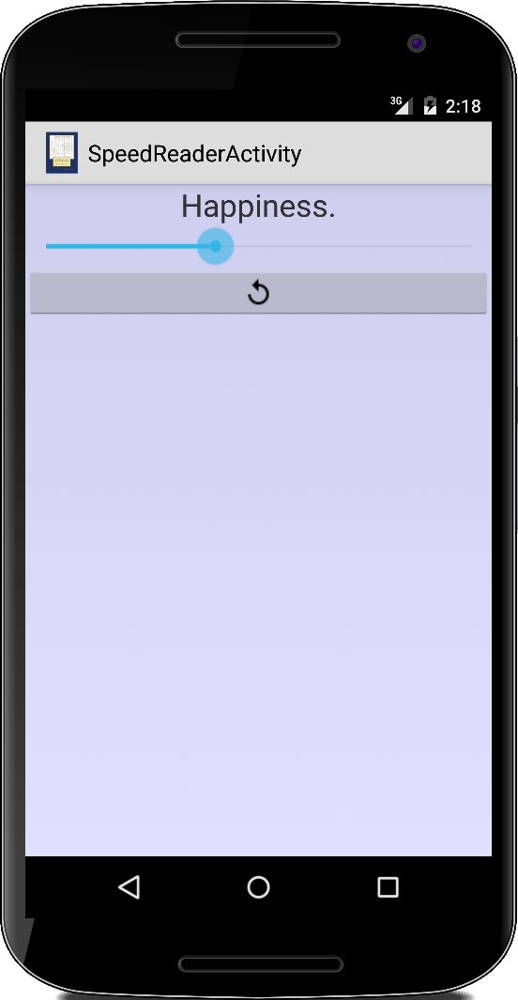

Concurrency
Auf unseren Computern und Telefonen sieht es so aus, als ob viele Dinge gleichzeitig passieren, mehrere geöffnete Fenster oder Aktivitäten, im Hintergrund laufende Dienste, gleichzeitige Downloads, etc. Es ist für uns so natürlich, dass wir es nicht einmal bemerken. Moderne Prozessoren haben mehrere Kerne, 4 bis 8 ist heutzutage die Norm, und die Zahl steigt mit jeder neuen Prozessorgeneration. Noch extremer ist das bei Grafikkarten bei denen die GPUs sogar mehrere tausend "Kerne", sogenannte Shader, haben. Die Frage die sich für uns stellt ist, wie nutzen wir diese zusätzlichen Kerne?
In unserer ganz normalen Java Anwendung laufen bereits mehrere Threads ohne unser Zutun: In einem einfachen Java-Konsolenprogramm gibt es mindestens den Haupt-Thread und den Garbage-Collector-Thread. Für eine typische Java-UI-Anwendung mit Swing haben wir zusätzlich den UI-Thread und einen Thread zur Verwaltung der Events. Diese "Standard Threads" merken wir normalerweise nicht einmal (es sei denn, sie tun nicht, was sie sollen).
In diesem Kapitel geht es darum zu lernen, wie wir unsere eigenen Threads schreiben können und wie man allgemeine Fallstricke vermeidet. Die Multi-Thread-Programmierung ist nicht ganz trivial wie wir gleich sehen werden.
.
Timer and TimerTask
Der einfachste Weg, um ein paar einfache Aufgaben im Hintergrund zu erledigen, ist mit Androids Timer und TimerTask Klassen. Grundsätzlich sagt der TimerTask, was zu tun ist und der Timer sagt, wann es zu tun ist. D.h. wir verwenden den Timer, um einen TimerTask zu starten. Der folgende Code schreibt alle zwei Sekunden eine kleine Meldung in die Logdatei:
public class TimerActivity extends Activity {
@Override
public void onCreate(Bundle savedInstanceState) {
super.onCreate(savedInstanceState);
long delay = 3000; // delay in ms before task is executed
long period = 2000; // time in ms between successive executions
Timer timer = new Timer();
timer.schedule(new TimerTask() {
@Override
public void run() {
Log.i("TimerActivity", "run()");
}
}, delay, period);
pause(20000); // wait 20 secs
timer.cancel();
}
}
Es ist interessant festzustellen, dass der Task weiterläuft, auch wenn wir die TimerActivity in den Hintergrund schicken. Erst beim Beenden der Application wird der Task beendet. Im LogCat sehen wir dass der Task koninuierlich weiterläuft:
.
Wenn eine Anwendung läuft, verbraucht sie Strom. Das gilt auch für die TimerActivity, selbst wenn sie im Hintergrund läuft. Wir sollten daher in der onPause() Methode dafür sorgen, dass evtl. laufende Threads angehalten werden, um die Batterie unseres Nutzers zu schonen. Für den Timer macht das die cancel() Methode.
.
AsyncTask
Der TimerTask ist einfach zu handhaben und tut was er soll. Allerdings, darf man aus der run() Methode des TimerTasks nicht auf UI Elemente zugreifen. Warum, sei dahin gestellt, wichtig ist, dass der große Bruder des TimerTasks, der AsyncTask das darf.
Ein klein wenig komplizierter ist der AsyncTask schon. Aber wir haben eben den Vorteil, dass wir auch auf die Benutzeroberfläche zugreifen können. Eine typische Anwendung ist z.B. ein Fortschrittsbalken. Wir beginnen mit einem sehr einfachen Beispiel, das lediglich aus einem ProgressDialog besteht:
public class ProgressBarActivity extends Activity {
private ProgressDialog progressDialog;
private Context context;
@Override
public void onCreate(Bundle savedInstanceState) {
super.onCreate(savedInstanceState);
this.context = this;
progressDialog = new ProgressDialog(this);
progressDialog.setCancelable(true);
progressDialog.setMessage("Downloading file...");
progressDialog.setProgressStyle(ProgressDialog.STYLE_HORIZONTAL);
progressDialog.setProgress(0);
progressDialog.setMax(100);
progressDialog.show();
new DownloadTask().execute("I am the parameter");
}
...
}
Um den AsyncTask zu starten, rufen wir einfach seine execute() Methode auf, mit oder ohne Parametern. In unserem Beispiel simulieren wir einen Download, der nur etwas Zeit verschwendet:
private class DownloadTask extends AsyncTask<String, Integer, String> { @Override protected void onPreExecute() { Log.i("DownloadTask.onPreExecute()", "starting..."); } @Override protected String doInBackground(String... params) { String response = params[0] + " - I am the return value."; for (int i = 1; i <= 10; i++) { try { Thread.sleep(1000); publishProgress(i * 10); } catch (InterruptedException e) { e.printStackTrace(); } } return response; } @Override protected void onProgressUpdate(Integer... values) { Log.i("DownloadTask.onProgressUpdate()", "percent=" + values[0]); progressDialog.setProgress(values[0]); } @Override protected void onPostExecute(String result) { Log.i("DownloadTask.onPostExecute()", "done: result=" + result); progressDialog.dismiss(); Toast.makeText(context, result, Toast.LENGTH_SHORT).show(); } }
Der Syntax von AsyncTask ist etwas gewöhnungsbedürftig. Zunächst fällt die spitze Klammer mit den Datenypen String, Integer und String auf: diese geben an welche Datentypen als Parameter und Rückgabewerte in den Methoden doInBackground(), onProgressUpdate() und onPostExecute() verwendet werden.
Der erste, in diesem Fall ein String, bezieht sich auf den Typ des Parametertyps der Methode doInBackground(). Dies ist auch der gleiche der an die execute()-Methode übergeben wird, die von der Aktivity aus aufgerufen wird. Der zweite, in diesem Fall ein Integer, ist der Parametertyp der Methode onProgressUpdate(). Und die letzte, in diesem Fall ein String, ist der Parametertyp der Methode onPostExecute(). Das klingt komplizierter als es ist.
Wenn wir also die execute() Methode in der Aktivity aufrufen, wird ein neuer Task gestartet und dann dessen doInBackground() Methode aufgerufen. Hier läuft der Task als eigener Thread. Solange wir die doInBackground() Methode nicht verlassen, lebt der Task. Verlässt der Task aber die doInBackground() Methode, dann wird automatisch die onPostExecute() Methode aufgerufen, und das war's.
Aber der Sinn der Übung war ja ursrpünglich, dass wir den Fortschrittsbalken im UI-Thread verändern können: das geschieht mit der Methode publishProgress(). Die rufen wir in der doInBackground() Methode. Die publishProgress() Methode ruft indirekt die onProgressUpdate() auf, und die wiederum darf auf den UI-Thread zugreifen.
Also im AsyncTask dürfen sowohl die onProgressUpdate() als auch die onPostExecute() auf den UI-Thread zugreifen. Allerdings die doInBackground() darf das nicht, dort passiert aber in der Regel die ganze Arbeit.
.
Threads
Wenn weder TimerTask noch AsyncTask unser Problem lösen, müssen wir zu schwereren Waffen greifen: den Threads. Im Prinzip verwenden sowohl der TimerTask als auch der AsyncTask Threads, nur wir sehen das nicht.
Es gibt zwei Möglichkeiten aus einer beliebigen Klasse einen Thread zu machen. Die erste ist einfach von der Thread Klasse zu vererben:
public class MyFirstThread extends Thread {
public void run() {
...
}
}
Die zweite ist das Runnable Interface zu implementieren:
public class MySecondThread implements Runnable {
public void run() {
...
}
}
In beiden Fällen müssen wir die run() Methode überschreiben, und ja das ist die gleiche run() Methode wie wir sie seit Karel kennen. Solange wir uns innerhalb der run() Methode befinden, lebt unser Thread. Sobald wir die run() Methode verlassen, ist er tot.
Wie der Mensch durchläuft das Leben eines Threads drei Phasen, er wird geboren, er lebt und er stirbt irgendwann. Und ähnlich wie bei Menschen, wenn man einmal tot ist, war's das. Soll heißen, man kann Threads nicht wiederbeleben.
Was wir allerdings noch nicht geklärt haben: wir werden denn Threads geboren? Das macht die start() Methode:
MyFirstThread th1 = new MyFirstThread(); th1.start(); MySecondThread mst = new MySecondThread(); Thread th2 = new Thread(mst); th2.start();
Im ersten Fall, wo wir vererben, können wir einfach die start() Methode direkt aufrufen. Im zweiten Fall, übergeben wir das Runnable Objekt an ein Thread Objekt, und starten dieses dann.
Der Unterschied zwischen dem Aufruf der start()-Methode und dem Aufruf der run()-Methode kann mit einem Sequenzdiagramm schön visualisiert werden.

.
Zu Lebzeiten können sich Threads in verschiedenen Zuständen befinden:
- Running
- Waiting, Sleeping, Blocked
- Ready to run
Der "Thread Scheduler" ist für die Verwaltung der Threads zuständig. Er sorgt dafür, dass jeder Thread mal zum Laufen kommt, und managt auch die Zustände der Threads.
.
SliderNoThreadingActivity
Sehen wir uns mal ein einfaches Beispiel an. Dazu betrachten wir erst einmal die Klasse Slider, bei der es sich einfach um ein GRect handelt:
private class Slider extends GRect {
public Slider(int size, int color) {
super(size / 2, size);
setFilled(true);
setFillColor(color);
}
}
Als nächstes erstellen wir zehn von diesen Sliders und lassen sie einfach von links nach rechts über den Bildschirm gleiten. Bisher haben wir das immer mit unserem game loop gemacht:
public class SliderNoThreadingActivity extends GraphicsProgram {
...
public void run() {
Slider[] sliders = createSliders();
// game loop
while (true) {
for (int i = 0; i < sliders.length; i++) {
sliders[i].move(STEP, 0);
}
pause(DELAY);
}
}
...
}
Wir haben also eine riesige Schleife, in der wir jedem der Slider sagen, dass er sich bewegen soll. Dann warten wir ein wenig und wiederholen das Ganze. Das ist das einfache Leben, wir haben nur einen Thread.
.
SliderThreadingActivity
Im obigen Beispiel sind die Sliders ziemlich dumm. Man muss ihnen sagen was sie tun sollen, nämlich sich zu bewegen. Wäre es nicht cool, wenn die Slider so klug wären, sich selbst zu bewegen? Um unsere Slider schlau zu machen, müssen wir einfach nur das Runnable Interface implementieren:
private class Slider extends GRect implements Runnable { public Slider(int size, int color) { super(size / 2, size); setFilled(true); setFillColor(color); } public void run() { while (true) { pause(DELAY); move(STEP, 0); } } }
Sobald wir sagen, dass unsere Klasse das Runnable Interface implementiert, müssen wir auch die run() Methode überschreiben, die zu diesem Interface gehört. In der run() Methode, haben wir eine Schleife, die unserem game loop sehr ähnlich sieht. Jeder Schieberegler macht jetzt seine eigene Bewegung und wartet, ganz von selbst.
Aber, wie machen wir die Sliders lebendig? Hier kommt die Thread Klasse ins Spiel:
public class SliderThreadingActivity extends GraphicsProgram {
private final int SLIDER_SIZE = 80;
private final int DELAY = 40;
private final int STEP = 5;
private RandomGenerator rgen = new RandomGenerator();
public void mousePressed(int x, int y) {
// create a new slider
Slider slider = new Slider(SLIDER_SIZE, rgen.nextColor());
add(slider, 0, rgen.nextDouble(0, getHeight()));
// run the slider in a new Thread
Thread sliderThread = new Thread(slider);
sliderThread.start();
}
...
}
Wir übergeben eines der Runnable Objekte (also einen Slider) an den Konstruktor der Thread Klasse und rufen dann einfach dessen start() Methode auf, um den Thread zu starten. Danach wird der Thread lebendig und macht sein eigenes Ding. Ist ziemlich einfach.
.
Sequence Diagram
Um den feinen Unterschied zwischen den beiden Ansätzen oben zu sehen, ist ein Sequenzdiagramm sehr hilfreich. Im Sequenzdiagramm werden die Objekte nach rechts und die Zeit nach unten angetragen. Dabei sieht man wie die verschiedenen Objekte untereinander kommunizieren. Im ersten Beispiel sehen wir einen dicken Balken der den momentan laufenden Thread anzeigt, den einzigen Thread:
.
Im zweiten Beispiel dagegen gibt es mehrere dicke Balken, jedes Mal, wenn ein neuer Thread erstellt wird, fügen wir einen neuen hinzu:

.
Jeder dieser neuen Threads macht sein eigenes Ding. Wir sehen auch, dass es außer beim Erstellen sehr wenig Interaktion zwischen den verschiedenen Threads gibt, und das ist eine gute Sache.
Für moderne CPUs mit mehreren Kernen bedeutet die Verwendung mehrerer Threads, dass jeder Thread auf einem eigenen Kern laufen kann. Während wir im Single-Thread-Modus programmieren, verwenden wir nur einen Kern, die anderen Kerne tun nichts. Das ist Verschwendung. Wenn wir also unsere Programme beschleunigen wollen, sollten wir Threads verwenden.
.
Dining Philosophers
Also, warum hat jeder so viel Angst vor Threads, scheint bisher ziemlich harmlos zu sein. Nun, es gibt ein sehr berühmtes Beispiel, das sehr schön visualisiert, was schief gehen kann: es nennt sich das Philosophenproblem, oder auf Englisch "Dining Philosophers" [1].
Die Geschichte geht so: Es waren einmal zwei chinesische Philosophen, die an einem Tisch saßen. Sie philosophierten und die einzige Ablenkung, die sie hatten, war ab und zu zu essen. Jeder Philosoph bekam eine Schüssel Reis, aber es wurden insgesamt nur zwei Stäbchen zur Verfügung gestellt. Jetzt ist es unmöglich Reis mit nur einem Stäbchen zu essen (zumindest für unsere Philosophen). Um zu überleben, muss ein Philosoph also beide Stäbchen bekommen.
Grundsätzlich gibt es da drei Möglichkeiten:
- Der erste Philosoph nimmt sehr schnell beide Stäbchen, isst den Reis und behält die Stäbchen für sich. Die Folge ist, dass es ihm gut geht, aber sein Mitphilosph wird verhungern.
- Der erste Philosoph nimmt sehr schnell beide Stäbchen, isst den Reis und legt die Stäbchen wieder auf den Tisch. Sein Mitphilosph nimmt die Stäbchen, isst. Beiden geht es gut und sie können fleisig weiter philosophieren.
- Jeder nimmt einen Stäbchen und behält es. Dann werden beide verhungern.
Es ist klar, dass das Problem in der Verteilung der Stäbchen liegt. Wenn jeder Philosoph sein eigenes Paar Essstäbchen hätte, würden beide glücklich bis ans Ende ihrer Tage leben. Aber weil es eine gemeinsame Resource gibt, die Stäbchen, und diese Resource für das Überleben unerlässlich ist, könnte es zu Problemen kommen.
Diese Probleme haben Namen und die häufigsten sind die folgenden vier:
- Race Condition: Ein Thread hat die kritische Resource und gibt sie nicht zurück. Philosoph 1 hat beide Stäbchen, isst weiter und gibt die Stäbchen nicht zurück.
- Starvation: Ein Thread kann nicht laufen, weil er auf eine kritische Resource wartet. Philosoph 2 wartet auf die Stäbchen und verhungert.
- Dead Lock: Ein Thread hat einen Teil einer kritischen Ressource, braucht aber einen anderen Teil, um mit seiner Aufgabe fortzufahren. Philosoph 1 hat ein Stäbchen und Philosoph 2 hat das andere. Aber man braucht beide Stäbchen, um zu essen (und zu überleben).
- Lock Starvation: Das apssiert, wenn eine kritische Ressource von einem Thread gesperrt ist und somit kein anderer Thread darauf zugreifen kann, was bedeutet, dass der andere Thread verhungert. Wenn einer der Philosophen ein Stäbchen behält und es nicht zurückgibt, dann ist das so etwas.
Im Allgemeinen führt Thread-unsicherer Code zu diesen Problemen. Also müssen wir lernen, wie man Thread-Save-Code schreibt!
Was ist also die Lösung in unserem Philosophenproblem? Die Lösung besteht aus zwei Teilen: Erstens, wenn ein Philosoph beide Stäbchen bekommt, sollte er sie nach dem Essen zurückgeben und den anderen im Idealfall benachrichtigen. Zweitens, falls er nur eines der Stäbchen bekommt, aber nicht das andere, sollte er dieses zurückgeben, ein wenig warten, und es erneut versuchen.
.
PhilosopherProgram
Sehen wir uns das Dining Philosopher Problem mal aus der Nähe an: dazu implementieren wir das Problem in als normale Java Konsolenanwendung. Wir verwenden Standard Java und nicht Android, da wir uns auf das wesentliche konzentrieren wollen. Wir fangen mit unseren Stäbchen an: Das ist eine sehr einfache Klasse, sie hat nur einen Namen als Instanzvariable:
private class ChopStick {
private String name;
public ChopStick(String name) {
this.name = name;
}
public String getName() {
return name;
}
}
Auch das Hauptprogramm ist ziemlich einfach. Es ist ein Standard-Java-Programm. Wir erstellen zwei Essstäbchen, fügen sie zu einer Liste hinzu, und wir erstellen zwei Philosophen mit ihren jeweiligen Threads:
public class PhilosopherProgram {
private List<ChopStick> chopSticks;
public PhilosopherProgram() {
// create list and add two chop sticks:
chopSticks = Collections.synchronizedList(new ArrayList<ChopStick>());
chopSticks.add(new ChopStick("A"));
chopSticks.add(new ChopStick("B"));
// create two philosophers:
Philosopher p1 = new Philosopher("1", chopSticks);
Philosopher p2 = new Philosopher("2", chopSticks);
Thread t1 = new Thread(p1);
Thread t2 = new Thread(p2);
t1.start();
t2.start();
}
public static void main(String[] args) {
PhilosopherProgram pp = new PhilosopherProgram();
}
...
}
Wichtig ist, dass unsere Liste von zwei Chopsticks, chopSticks, die gemeinsame Resource ist. Deshalb haben wir die Liste mit synchronizedList() zu einer synchronisierten Liste gemacht. Wann immer wir eine Liste zwischen Threads teilen, müssen wir sicherstellen, dass es sich um eine synchronisierte Version handelt.
Die Philosopher Klasse selbst implementiert das Runnable Interface, d.h. sie ist ein Thread. Zusätzlich hat sie einen Namen, eine Referenz auf die gemeinsame Ressource, die chopSticks, und sie hat einen Lebenszähler, die liveForce. Ist die liveForce auf Null, ist der Philosoph tot.
private class Philosopher implements Runnable {
private String name;
private List<ChopStick> chopSticks;
private int liveForce = 5;
public Philosopher(String name, List<ChopStick> chopSticks) {
this.name = name;
this.chopSticks = chopSticks;
}
@Override
public void run() {
...
}
}
Was uns im weiteren interessiert ist zu sehen, was alles in der run() Methode schief gehen kann.
Philosopher v.1
In unserem ersten Versuch schreiben wir Code, wie wir es normalerweise tun würden. Also, solange wir noch liveForce haben, laufen wir weiter. Bei jeder Iteration verlieren wir ein Leben. Nur wenn wir beide Stäbchen haben, können wir essen und damit unsere liveForce wieder auffüllen. Wenn wir kein Leben mehr haben, sind wir tot.
private void run() {
ChopStick cs1 = null;
ChopStick cs2 = null;
while (liveForce > 0) {
liveForce--;
System.out.println("Philosopher #" + name + " still has "
+ liveForce + " lives.");
// wait between 0 and DELAY milliseconds
pause(new Random().nextInt(DELAY));
// try to get both chop sticks
if (cs1 == null) {
if (chopSticks.size() > 0) {
cs1 = chopSticks.remove(0);
System.out.println("Philosopher #" + name
+ " got chop stick " + cs1.getName());
}
} else {
if (chopSticks.size() > 0) {
cs2 = chopSticks.remove(0);
System.out.println("Philosopher #" + name
+ " got chop stick " + cs2.getName());
}
}
// do we have both chop sticks?
if ((cs1 != null) && (cs2 != null)) {
liveForce = 5;
}
}
System.out.println("Philosopher #" + name + " is dead.");
}
Was die Stäbchen angeht, versuchen wir zuerst, das ersten Stäbchen zu bekommen. Sobald wir das erste haben, versuchen wir das zweite zu bekommen.
Das mag jetzt etwas komisch erscheinen, aber es ist meist nicht ganz trivial Threading Probleme zu entdecken. Deswegen übertreiben wir hier ein wenig, damit die Problem deutlich zu Tage treten. Deshalb haben wir die Pause oben eingefügt. Die Probleme existieren trotz Pause, sie treten dann aber nur seltener auf. (Für manch einen mag das auch schon eine Lösung sein...)
Wenn wir diesen Code ein paar Mal ausführen, bemerken wir zwei verschiedene Ergebnisse. Die meiste Zeit werden beide Philosophen sterben, denn jeder bekommt einen Stäbchen, das ist ein dead lock, das zum Verhungern (starvation) führt. Aber ab und zu bekommt der eine Philosoph beide Stäbchen (race condition) und der andere Philosoph wird sterben (starvation). Aber es passiert nie, dass beide Philosophen sehr lange überleben.
Man sieht das beispielhaft an der folgende Ausgabe im LogCat:
|
|
|

.
Philosopher v.2
Offensichtlich haben wir zwei Probleme. wir wollen das zweite zuerst lösen: natürlich, wenn wir anständige Philosophen sind, dann müssen wir die Stäbchen nach dem Essen zurückgeben.
private void run() {
...
// do we have both chop sticks?
if ((cs1 != null) && (cs2 != null)) {
liveForce = 5;
// return chop sticks
chopSticks.add(cs1);
chopSticks.add(cs2);
cs1 = null;
cs2 = null;
System.out.println("Returned chop sticks.");
}
...
}
Wenn wir diesen Code ein paar Mal ausführen, stellen wir fest, dass jedes Mal beide Philosophen sterben, nur dauert es etwas länger. Wir haben das Problem der race condition gelöst. Das ist also eine gute Sache (für uns, nicht für die Philosophen).
Im LogCat sieht das so aus:
|
|
.
Synchronization
Wie lösen wir das Deadlock Problem? Das heißt in unserem Beispiel, dass jeder Philosoph nur ein Stäbchen hat? Eine Idee wäre, nachdem wir den ersten Chop-Stick haben, zu versuchen den zweiten zu bekommen. Wenn wir es schaffen, gut. Wenn wir es nicht schaffen, könnten wir unseren ersten Chop-Stick zurücklegen und fangen von vorne an. Das sieht zunächst nach einer guten Lösung aus. Es ist auch besser als die anderen Lösungen, die wir oben versucht haben. Aber wenn wir den Code ausführen, merken wir immer noch, dass die Philosophen weiter sterben.
Wir könnten noch ein paar andere Sachen versuchen, aber es verschiebt nur das eigentliche Problem. Wir brauchen eine radikal andere Lösung: Was, wenn wir dem anderen Philosophen verbieten könnten, an die Stäbchen zu kommen? Wir bauen eine Art Barriere auf dem Tisch, die es uns erlaubt, beide Stäbchen zu greifen. Dann essen wir, und nachdem wir fertig sind, geben wir die Stäbchen zurück und entfernen die Barriere. Dann kann der andere das Gleiche tun. Dieses "Barrierebauen" ist das, was man Synchronisation nennt.
Philosopher v.3
Der Code mit Synchronisation sieht so aus:
private void run() {
...
// try to get both chop sticks
// lock the other guy(s) out
synchronized (chopSticks) {
if (chopSticks.size() > 0) {
cs1 = chopSticks.remove(0);
System.out.println("Philosopher #" + name
+ " got chop stick " + cs1.getName());
}
if (chopSticks.size() > 0) {
cs2 = chopSticks.remove(0);
System.out.println("Philosopher #" + name
+ " got chop stick " + cs2.getName());
}
}
...
}
Der synchronisierte Block wird wie eine Zeile Code ausgeführt, d.h. alle anderen Threads (und Philosophen) müssen warten, bis wir mit unserem Codeblock fertig sind. Das ist die Holzhammer Methode, sie ist nicht sehr ausgefallen, aber sie löst unser Deadlock Problem. Wenn unsere Philosophen die Stäbchen nach dem Essen zurückgeben, dann werden beide mal dran kommen und beide überleben.
Philosopher v.4
Dass wir den Ansatz oben die "Holzhammer Methode" genannt haben, deutet darauf hin, dass es anscheinend auch eine vornehmere Methode gibt. Die wollen wir uns jetzt ansehen. In unserer dritten Version verwendeten wir den so genannten Polling-Ansatz: Der Philosoph, der die Stäbchen nicht bekommt, muss weiter versuchen, sie zu bekommen, das ist Polling. Polling ist nicht sehr effizient. Anstelle es immer wieder zu versuchen und zu versuchen, wäre es doch besser zu warten (wait), wenn wir wissen, dass jemand anderes die Stäbchen hat. Wenn aber der andere fertig ist, sollte er uns doch gefälligst benachrichtigen (notify). Das ist es, was der folgende Code tut:
public void run() {
...
// try to get both chop sticks
synchronized (chopSticks) {
if (chopSticks.size() < 2) {
try {
chopSticks.wait();
} catch (InterruptedException e) {
e.printStackTrace();
}
} else {
cs1 = chopSticks.remove(0);
System.out.println("Philosopher #" + name
+ " got chop stick " + cs1.getName());
cs2 = chopSticks.remove(0);
System.out.println("Philosopher #" + name
+ " got chop stick " + cs2.getName());
}
}
// do we have both chop sticks?
if ((cs1 != null) && (cs2 != null)) {
liveForce = 5;
// now return the chop sticks:
synchronized (chopSticks) {
chopSticks.add(cs1);
chopSticks.add(cs2);
cs1 = null;
cs2 = null;
System.out.println("Returned chop sticks.");
chopSticks.notifyAll();
}
}
...
}
Wir fangen damit an, mit synchronized die anderen Philisophen auszusperren. Dann checken wir, ob zwei Stäbchen verfügbar sind. Wenn nicht, dann warten wir. Wenn ja, schnappen wir uns beide und essen. Sobald wir mit dem Essen fertig sind, geben wir beide Stäbchen zurück und benachrichtigen die anderen, dass die Stäbchen wieder verfügbar sind.
Hypothetisch hätten wir auch einen riesigen synchronisierten Codeblock erstellen und alles darin machen können. Aber das ist eine schlechte Angewohnheit und anfällig für Probleme. Die Regel ist, synchronisierte Blöcke so klein wie möglich zu halten. Das haben wir im obigen Code getan. Testen Sie ob der Code oben funktioniert, Sie werden sehen, dass unsere beiden Philosophen glücklich bis ans Ende ihrer Tage leben werden.
.
Producer - Consumer Problem
Sehr oft treffen wir auf ein Szenario, in dem ein Thread Nachrichten an einen anderen Thread sendet. Dies wird auch als das Producer-Consumer-Problem bezeichnet [2]. Ein Thread produziert also immer die Nachrichten und der andere Thread verbraucht sie.
Ein Beispiel ist ein Webserver: der lauscht immer auf eingehende Requests. Normalerweise leitet dieser Listener-Thread diese eingehenden Nachrichten einfach an andere Threads weiter, um die Arbeit zu erledigen. Denn wenn der Listener Thread auch die Arbeit machen würde, könnte ein Teil der eingehenden Nachricht verloren gehen.
Die beiden Threads (Webserver und Listener) teilen sich eine gemeinsame Ressource, die Requests. Wie wir bei unseren Philosophen gesehen haben, könnte das zu Problemen führen. Da dies ein Problem ist, das sehr häufig auftritt, haben sich Leute eine Lösung ausgedacht, die BlockingQueue [3]. Wir sehen uns die blockierende Warteschlange gleich mal im Code an. In unserer Activity erstellen wir eine BlockingQueue und je einen Producer und Consumer Thread:
public class ProducerConsumerActivity extends Activity {
@Override
public void onCreate(Bundle savedInstanceState) {
super.onCreate(savedInstanceState);
// can keep at most 10 elements:
BlockingQueue<String> queue = new ArrayBlockingQueue<String>(10);
Producer p = new Producer(queue);
Consumer c = new Consumer(queue);
Thread t1 = new Thread(p);
Thread t2 = new Thread(c);
t1.start();
t2.start();
}
...
}
Im Allgemeinen kann es mehr als einen Consumer und auch mehr als einen Producer geben. In unserem Fall sind die Nachrichten nur Strings, aber das kann alles mögliche sein, sogar binäre Daten.
Der Producer produziert die Nachrichten und fügt sie in die Warteschlange ein:
private class Producer implements Runnable {
private BlockingQueue<String> queue;
public Producer(BlockingQueue<String> queue) {
this.queue = queue;
}
@Override
public void run() {
try {
// send ten messages on average one per second
for (int i = 0; i < 10; i++) {
queue.put("Message #" + i);
pause(DELAY / 2 + rnd.nextInt(DELAY / 2));
}
// end the consumer thread
queue.put("quit");
Log.i("Producer", "Producer is done.");
} catch (InterruptedException e) {
Log.i("Producer", e.getMessage());
}
}
}
Der Konsument nimmt sie aus der Warteschlange und konsumiert sie:
private class Consumer implements Runnable {
private BlockingQueue<String> queue;
public Consumer(BlockingQueue<String> queue) {
this.queue = queue;
}
@Override
public void run() {
try {
// receive messages
String msg;
while (!(msg = queue.take()).equals("quit")) {
Log.i("Consumer", msg);
}
// we are done
Log.i("Consumer", "Consumer is done.");
} catch (InterruptedException e) {
Log.i("Consumer", e.getMessage());
}
}
}
Wirklich nicht so schwer. Im LogCat sieht das dann so aus:
.
Wenn wir mit BlockingQueues in Java arbeiten, haben wir verschiedene Implementierungen zur Auswahl: ArrayBlockingQueue, DelayQueue, LinkedBlockingDeque, LinkedBlockingQueue, LinkedTransferQueue, PriorityBlockingQueue, und SynchronousQueue. Und es gibt auch verschiedene Methoden zum Schreiben, Lesen und Prüfen der Warteschlange. Man sollte hier erst einmal die Dokumentation lesen [3] und danach eine bewusste Entscheidung treffen.
.
Review
In diesem Kapitel haben wir zunächst was zu TimerTask und AsyncTask erfahren. Dann haben wir gesehen wie man Threads erstellt und ausführt, aber auch die Probleme kennen gelernt die dabei auftreten können wie Deadlock, Race-Condition und Starvation. Gelöst haben wir diese Problem mit Synchronisation. Und schließlich haben wir noch das Producer-Consumer-Problem mit einer BlockingQueue gelöst.
.
Projekte
In den Projekten vertiefen wir uns den AsyncTask mit zwei Beispielen. Anschließend werden wir sehen wie Grafikprogramme von mehreren Threads profitieren können, dabei werden wir vor allem auch das Thema Synchronisation vertiefen. Zum Schluß sehen wir noch wie wir explizit von den vielen CPU Cores in unserem Smartphones Nutzen ziehen können.
.
AlarmClock
Eine erste Anwendung für den AsyncTask ist ein Wecker. Die UI können wir aus dem ersten Semester borgen. Was neu ist ist der AlarmClockTask. Der wird über die onClick() gestartet, und wir sagen über die execute() Methode auch wann der Alarm losgehen soll:
public class AlarmClockActivity extends Activity {
...
// UI stuff
btnStart.setOnClickListener(new View.OnClickListener() {
public void onClick(View v) {
...
long alarmTime = ...;
srt = new AlarmClockTask();
srt.execute(alarmTime);
}
});
...
// Params, Progress, Result
private class AlarmClockTask extends AsyncTask<Long, Long, String> {
@Override
protected String doInBackground(Long... params) {
long alarmTime = params[0];
while (true) {
long remainingTime = alarmTime - System.currentTimeMillis();
if (remainingTime <= 0)
break;
publishProgress(remainingTime);
pause(DELAY);
}
return "done";
}
@Override
protected void onProgressUpdate(Long... values) {
face.setText(convertSecondsInTime(values[0]));
}
@Override
protected void onPostExecute(String result) {
// 100% volume
ToneGenerator toneG = new ToneGenerator(AudioManager.STREAM_ALARM, 100);
// 1000 ms
toneG.startTone(ToneGenerator.TONE_CDMA_ALERT_CALL_GUARD, 1000);
}
...
}
}
Die alarmTime wird nämlich der doInBackground() Methode als Parameter übergeben. Über publishProgress() wird dann in der onProgressUpdate() die UI geupdated. Wenn die Zeit abgelaufen ist, wird die onPostExecute() aufgerufen, und dort erzeugen wir über den ToneGenerator einen Alarmton. Interessant ist vielleicht noch zu beobachten was passiert wenn unsere Activty in den Hintergrund geht, oder wenn das Smartphone ausgeschaltet wird.
.
SpeedReader
Es gibt eine Vielzahl von Techniken wie man seine Lesegeschwindigkeit erhöhen kann [4], eine davon ist die App die wir gleich schreiben werden. Auch hier benötigen wir wieder einen AsyncTask um auf die UI zugreifen zu können.
Die UI besteht aus einem TextView für den zu lesenden Text, einer SeekBar für die Geschwindigkeit, und einem Button um das Ganze noch mal zu wiederholen.
public class SpeedReaderActivity extends Activity {
private final int MAX_SPEED = 1000;
private final int INITIAL_SPEED = 500;
private String text = "We hold these truths to be self-evident, "
+ "that all men are created equal, "
+ "that they are endowed by their Creator with certain unalienable Rights, "
+ "that among these are Life, Liberty and the pursuit of Happiness.";
...
}
Auch hier wird der AsyncTask gestartet, wenn wir auf den Button klicken. In der execute() Methode übergeben wir dieses Mal aber den Text der vorgelesen werden soll. Der SpeedReaderTask selbst besteht lediglich aus zwei Methode:
// Params, Progress, Result
private class SpeedReaderTask extends AsyncTask<String, String, String> {
protected String doInBackground(String... params) {
String text = params[0];
String[] words = text.split(" ");
for (String word : words) {
pause(delay);
publishProgress(word);
}
return "done";
}
protected void onProgressUpdate(String... values) {
String word = values[0];
tv.setText(word);
}
}
.
Confetti
Das Konfetti-Programm aus dem ersten Semester soll das erste Opfer unserer neuen Superpowers werden: Anstelle einfach dumm herunterzufallen, sollen die Confetti sich auch noch ein bisschen zufällig hin uns her bewegen. In unserem ursprünglichen Programm waren die Confetti zufällig gefärbte GOvals. Ähnlich wie wir GRects in der SliderThreadingActivity zu Sliders gemacht haben, verwandeln wir nun die GOvals in Confettis, die das Runnable Interface implementieren:
private class Confetti extends GOval implements Runnable {
public Confetti(int width, int col) {
super(width, width);
setFilled(true);
setFillColor(col);
}
@Override
public void run() {
// animate the slide across the screen
for (int i = 0; i < HEIGHT / STEP; i++) {
pause(DELAY_MOVE);
int x = (int) (Math.random() * 2 - 1);
move(x, STEP);
}
}
}
In der run() Methode bewegen wir das Confetti um den Betrag STEP nach unten und lassen es auch ein kleines bisschen nach links oder rechts wandern. In unserem GraphicsProgram erstellen wir neue Confetti wie im ersten Semester, und machen dann aber daraus Threads:
public class ConfettiActivity extends GraphicsProgram {
...
public void run() {
waitForTouch();
HEIGHT = getHeight();
while (true) {
// create a new random confetti
int width = rgen.nextInt(SIZE / 2, SIZE);
int col = rgen.nextColor();
double x = rgen.nextDouble(-SIZE / 2, getWidth());
double y = rgen.nextDouble(-SIZE / 2, 100);
Confetti confetti = new Confetti(width, col);
add(confetti, x, y);
// run the confetti in a new Thread
Thread confettiThread = new Thread(confetti);
confettiThread.start();
pause(DELAY_CREATION);
}
}
...
}
Observations
Der Code, wie er ist, läuft gut, aber wenn wir ihn eine Weile laufen lassen, werden wir einige interessante Beobachtungen machen. Wir stellen fest, dass sich das ganze Konfetti am Boden sammelt. Das sieht gut aus, aber es ist ein Problem: Das sind alles tote Threads, und der Müll wird nicht eingesammelt (garbage collected). In einem lang laufenden Programm führt dies früher oder später zu Speicherproblemen.
Wenn wir die Anzahl der pro Sekunde erzeugten Konfetti erhöhen, dann friert das Programm irgendwann einfach ein. In einer ersten Schätzung könnten wir denken, dass das mit der Tatsache zu tun hat, dass wir mehr Konfetti haben, als wir pro Sekunde zeichnen können. Aber das ist nicht richtig. Der wahre Grund liegt in der sehr schlampigen Art und Weise, wie wir die draw() Methode der GObjects in der onDraw() Methode der GView Klasse aufrufen.
Noch etwas anderes: Lassen wir die App ein wenig laufen. Dann schicken wir die App in den Hintergrund, indem wir etwas anderes auf unserem Handy starten und ein wenig warten. Dann kehren wir zu unserer Confetti App zurück: wenn wir genau hinsehen, bemerken wir vielleicht kurz den alten Zustand der Benutzeroberfläche, und dann tauchen auf einmal ganz viele neue Confettis auf. Das heißt, obwohl der UI-Thread nicht lief, wurden weiterhin im Hintergrund Confettis generiert. Jedes Mal, wenn wir einen Thread starten, einschließlich des Haupt-Threads, läuft der so lange weiter, wie er in seiner run() Methode ist. Daher ist unser Ansatz, eine Endlosschleife innerhalb der run() Methode durchzuführen, nicht besonders schlau.
.
Snowflakes
Am Ende von Kapitel vier im zweiten Buch sahen wir die KochSnowflake. Stellt sich heraus, wenn wir die Confetti im obigen Programm durch Schneeflocken ersetzen, bekommt das Ganze eine Weihnachtliche Atmosphäre. Eine Möglichkeit, eine Klasse SnowFlake zu erstellen, ist mithilfe des GPolygon. Wenn das mit GPolygonen aber nicht funktioniert, kann man alternativ auch nach Bildern von Schneeflocken suchen und die GImage-Klasse verwenden.
private class SnowFlake extends GPolygon implements Runnable {
...
public SnowFlake(int size) {
super();
createKochSnowflake(0, 0, size, NR_OF_ITERATIONS);
}
private void createKochSnowflake(int x, int y, int length,
int nrOfIterations) {
drawKochLine(x, y, length, 0, nrOfIterations);
drawKochLine(x + length, y, length, -120, nrOfIterations);
double x1 = x + length * Math.cos(-60 * Math.PI / 180);
double y1 = y - length * Math.sin(-60 * Math.PI / 180);
drawKochLine(x1, y1, length, 120, nrOfIterations);
}
private void drawKochLine(double x0, double y0, double length,
double angle, int nrOfIterations) {
// base case:
if (nrOfIterations == 0) {
double x1 = x0 + length * Math.cos(angle * Math.PI / 180);
double y1 = y0 - length * Math.sin(angle * Math.PI / 180);
addVertex((int) x1, (int) y1);
return;
// recursive case:
} else {
double len = length / 3;
double ang = angle;
drawKochLine(x0, y0, len, ang + 0, nrOfIterations - 1);
double x1 = x0 + len * Math.cos(ang * Math.PI / 180);
double y1 = y0 - len * Math.sin(ang * Math.PI / 180);
drawKochLine(x1, y1, len, ang + 60, nrOfIterations - 1);
ang = ang + 60;
double x2 = x1 + len * Math.cos(ang * Math.PI / 180);
double y2 = y1 - len * Math.sin(ang * Math.PI / 180);
drawKochLine(x2, y2, len, ang - 120, nrOfIterations - 1);
ang = ang - 120;
double x3 = x2 + len * Math.cos(ang * Math.PI / 180);
double y3 = y2 - len * Math.sin(ang * Math.PI / 180);
drawKochLine(x3, y3, len, ang + 60, nrOfIterations - 1);
}
}
}
.
Fireworks
Eine weitere schöne Anwendung von Multi-Threading ist ein Feuerwerksprogramm. Ein Feuerwerk besteht aus Raketen, die explodieren, und dann folgen kleine Lichter den Gesetzen der Schwerkraft. Wir ignorieren die Rakete und kümmern uns nur um die kleinen Lichter nach der Explosion:
public class FireWorksActivity extends GraphicsProgram {
...
public void run() {
...
while (true) {
startExplosion();
pause(DELAY);.
}
}
...
}
Bei der Explosion erzeugen wir eine feste Anzahl von Lichtern (GLight), jedes mit der gleichen Farbe, alle an der gleichen Stelle beginnend, aber jedes mit einer anderen Richtung:
private void startExplosion() {
int col = rgen.nextBrightColor();
int x = rgen.nextInt(0, getWidth());
int y = rgen.nextInt(0, getHeight());
double angle = Math.random(); // start with a random angle
double deltaAngle = 2.0 * Math.PI / NR_LIGHTS;
for (int i = 0; i < NR_LIGHTS; i++) {
double vx = SPEED * Math.cos(angle);
double vy = SPEED * Math.sin(angle);
GLight light = new GLight(vx, vy, col);
add(light, x, y);
Thread thread = new Thread(light);
thread.start();
angle += deltaAngle;
}
}
Aus jedem Licht wird ein eigener Thread. D.h. bei vielen Explosionen gibt es viele Threads! Die GLight Klasse selbst ist trivial:
private class GLight extends GOval implements Runnable {
private static final int DELAY = 40;
private static final double GRAVITY = 0.05;
double vx;
double vy;
public GLight(double vx, double vy, int col) {
super(SIZE, SIZE);
setFillColor(col);
setFilled(true);
this.vx = vx;
this.vy = vy;
}
@Override
public void run() {
// animate the light
for (int i = 0; i < 100; i++) {
pause(DELAY);
move((int) vx, (int) vy);
vy = vy + GRAVITY;
}
// make the lights invisible:
setFillColor(Color.BLACK);
}
}
Observations
Mit unserer Fireworks-Aktivity können wir noch ein paar zusätzliche Dinge lernen. Wenn wir die Anwendung etwas länger laufen lassen, dann stellen wir fest, dass die Framerate mit der Zeit abnimmt. Warum ist das so? Weil keines der Lichtobjekte vom Bildschirm entfernt wird. (Wenn wir die Anzahl der Feuerwerke, die wir pro Sekunde erzeugen, erhöhen, wird der Effekt früher sichtbar.)
Um das Ganze etwas näher zu untersuchen, sehen wir uns mal an wie viel Speicher unsere Anwendung verbraucht. Mit der folgenden Methode können wir den Speicherverbrauch ermitteln und im Log ausgeben:
private ActivityManager.MemoryInfo getAvailableMemory() {
ActivityManager activityManager = (ActivityManager) this.getSystemService(ACTIVITY_SERVICE);
ActivityManager.MemoryInfo memoryInfo = new ActivityManager.MemoryInfo();
activityManager.getMemoryInfo(memoryInfo);
return memoryInfo;
}
Nicht überraschend stellen wir fest, dass der verfügbare Speicher immer weniger wird. Ab und zu schlägt der Garbage Collector zu, aber er kann nicht wirklich viel tun, da wir für immer an unseren Lichtern festhalten, was zur Folge hat, dass uns früher oder später der Speicher ausgeht. Wieder können wir den Effekt beschleunigen, indem wir die folgenden beiden Zeilen zu unserer GLight Klasse hinzufügen:
private class Light extends GOval implements Runnable {
...
byte[] oneKiloByte;
public Light(double vx, double vy, int col) {
...
oneKiloByte = new byte[1024];
}
...
}
Die Änderung macht unsere Lichter ein wenig "schwerer" aus Sicht des Speichers.
Also auch das Fireworks hat das gleiche Problem wie Confetti: Lassen wir die App ein wenig laufen und schicken sie dann in den Hintergrund. Wenn wir dann zu unserer App zurückkehren, bemerken wir kurz den alten Zustand der Benutzeroberfläche, bevor auf einmal sofort eine ganze Reihe neuer Lichter auftaucht, und je nachdem, wie lange wir gewartet haben, friert die App ein.
.
Cleanup after Yourself
Wenigstens einmal sollten wir ein Programm schreiben, das sein Chaos auch wieder aufräumt. Grundsätzlich müssen wir die Lichter aus unserem Programm entfernen. Dies geschieht mit der remove() Methode der Klasse GraphicsProgram. Aber woher wissen wir, wann wir ein Licht entfernen müssen? Wenn das Licht fertig ist, verlässt es die run() Methode. Danach ist der Licht Thread tot. Glücklicherweise können wir einen Thread mit der isAlive()-Methode fragen, ob er tot oder lebendig ist.
Wir sammeln also alle Threads in einer Map:
public class FireWorksCleanActivity extends GraphicsProgram {
...
private Map<Thread, Light> allLights = new HashMap<Thread, Light>();
private void startExplosion() {
...
for (int i = 0; i < NR_LIGHTS; i++) {
...
Light light = new Light(vx, vy, col);
add(light, x, y);
Thread thread = new Thread(light);
thread.start();
allLights.put(thread, light);
...
}
}
...
}
Dann müssen wir in regelmäßigen Abständen unsere Liste durchgehen,
public void run() {
...
while (true) {
...
cleanupLightsNoLongerUsed();
...
}
}
und die toten Threads finden:
private void cleanupLightsNoLongerUsed() {
List<Thread> toBeRemoved = new ArrayList<Thread>();
for (Thread t : allLights.keySet()) {
if (!t.isAlive()) {
Light l = allLights.get(t);
// remove light from UI:
remove(l);
toBeRemoved.add(t);
}
}
for (Thread t : toBeRemoved) {
allLights.remove(t);
}
}
Wir entfernen die Lichter vom Bildschirm und wir müssen die Lichter auch aus unserer Map entfernen. Letzteres ist etwas tricky: während wir über eine Liste oder Map iterieren, dürfen wir keine Elemente aus der Liste entfernen. Deshalb brauchen wir eine temperoräre Liste, um die Elemente zu sammeln, die entfernt werden sollen (toBeRemoved), und wenn wir alle gefunden haben, können wir sie dann nach der Iteration entfernen.
Funktioniert es? Testen wir es: wir erhöhen wieder das "Gewicht" jeder Leuchte, indem wir die Größe des oneKiloByte Arrays um den Faktor zehn erhöhen. Wir werden feststellen, dass die App viel länger ohne Probleme läuft. Was zeigt, dass wir gute Arbeit geleistet haben. Aber irgendwann (in meinem Fall, wenn das oneKiloByte etwa ein Megabyte groß ist) wird man eine wirklich seltsame Fehlermeldung bekommen: Der Müllsammler (garbage collector) gibt auf: viel zu viel zum Aufräumen.
.
AntiFreeze
Haben wir unser "Freeze"-Problem behoben? Nein, das ist noch da. Der Grund ist, dass unsere run() Methode weiterläuft, auch wenn unsere Anwendung in den Hintergrund geht:
public void run() {
...
while (true) {
startExplosion();
pause(DELAY);
cleanupLightsNoLongerUsed();
Log.i("FireWorksActivity",
"availMem=" + getAvailableMemory().availMem +
", nr of lights=" + allLights.size());
}
}
Das sehen wir, wenn wir die Anzahl der Lichter beobachten: Obwohl unser Prozess im Hintergrund läuft, läuft er weiter und erhöht die Anzahl der Lichter. Wenn wir dann zurückkehren, laufen so viele Threads, dass unser UI-Thread nie genug Zeit hat, mit dem Zeichnen all der Lichter nachzukommen.
Was wir also tun müssen, ist unseren Thread zu unterbrechen, wenn die Anwendung in den Hintergrund geht. Dafür überschreiben wir die Methode onPause(), die wird ja aufgerufen kurz bevor unsere Activity in den Hintergrund geschickt wird. In ihr teilen wir unseren Threads mit, dass sie schlafen sollen:
private Object mPauseLock; private boolean mPaused; protected void onPause() { synchronized (mPauseLock) { mPaused = true; } super.onPause(); }
Offensichtlich müssen wir unsere Threads wieder aufwecken, wenn wir aus dem Winterschlaf zurückkehren. Das geschieht in der onResume() Methode:
protected void onResume() {
synchronized (mPauseLock) {
mPaused = false;
mPauseLock.notifyAll();
}
super.onResume();
}
Und in unserem GameLoop müssen wir prüfen, ob wir pausieren sollen oder nicht:
public void run() {
...
while (true) {
startExplosion();
pause(DELAY);
cleanupLightsNoLongerUsed();
Log.i("FireWorksActivity",
"availMem=" + getAvailableMemory().availMem +
", nr of lights=" + allLights.size());
synchronized (mPauseLock) {
while (mPaused) {
try {
mPauseLock.wait();
} catch (InterruptedException e) {
}
}
}
}
}
Sie haben wahrscheinlich bemerkt, dass wir jedes Mal, wenn wir versuchen, die mPaused Variable zu lesen oder zu ändern, sorgfältig auf ein Sperrobjekt synchronisiert haben (mPauseLock). Und wir verwenden dieses Sperrobjekt, um die Methoden wait() und notifyAll() aufzurufen. Das Sperrobjekt übernimmt die Sperrverwaltung.
Testen Sie Ihre Anwendung jetzt, es wird funktionieren. Auch nach einer Woche im Hintergrund lief meine App noch gut. Es gab ein kleines Speicherleck, das auch durch eine andere Anwendung verursacht worden sein könnte. Für mich ist eine Woche gut genug.
.
RaceHorses
In diesem letzten Beispiel wollen wir ein kleines Rennen durchführen, zum Beispiel zwischen Pferden [5]. Offensichtlich sind unsere Pferde GRects, was sonst. Wie immer beginnen wir mit der Aktivity, wir erstellen zehn Pferde, platzieren sie auf dem Bildschirm, verwandeln sie in Threads und starten sie:
public class RaceHorseActivity extends GraphicsProgram {
...
public void run() {
boolean[] isThereAWinner = new boolean[1];
isThereAWinner[0] = false;
// create ten horses
RaceHorse[] rhs = new RaceHorse[NR_OF_HORSES];
for (int i = 0; i < rhs.length; i++) {
rhs[i] = new RaceHorse(HORSE_SIZE / 2, HORSE_SIZE, isThereAWinner);
add(rhs[i], 100, 50 + ((HORSE_SIZE + 20) * i));
}
GThickLine finishLine = new GThickLine(600 - 2, 0, 600 - 2, getHeight(), 2);
add(finishLine);
// turn them into threads
Thread[] ths = new Thread[NR_OF_HORSES];
for (int i = 0; i < rhs.length; i++) {
ths[i] = new Thread(rhs[i]);
}
// start them of
for (int i = 0; i < rhs.length; i++) {
ths[i].start();
}
}
Die Sache, die ein wenig knifflig ist, wie wissen wir, wer gewonnen hat? Es gibt da verschiedene Möglichkeiten, aber die eleganteste ist die folgende: wir deklarieren eine boolesche Variable isThereAWinner, setzen sie anfänglich auf false und übergeben sie an alle Pferde. Wenn ein Pferd die Ziellinie erreicht, prüft es den Wert dieser Variablen. Wenn er false ist, dann ändert es ihn auf true, so dass alle anderen Pferde, sehen wer der erste war:
private class RaceHorse extends GRect implements Runnable {
private boolean[] isThereAWinner;
public RaceHorse(double w, double h, boolean[] isThereAWinner) {
super((int) w, (int) h);
this.isThereAWinner = isThereAWinner;
}
@Override
public void run() {
for (int i = 0; i < 50; i++) {
move(10, 0);
pause(rgen.nextInt(50, 150));
}
// reached finish, check if I am first
if (!isThereAWinner[0]) {
isThereAWinner[0] = true;
//pause(200):
setFilled(true);
setFillColor(Color.RED);
}
invalidate();
}
}
Warum haben wir ein Array anstelle einer stink-normalen booleschen Variable verwenden? Der Grund dafür ist, dass primitive Datentypen als Kopie übergeben werden (pass-by-value), während Objekte und Arrays als Referenz übergeben werden (pass-by-reference). In unserem Beispiel macht es keinen Sinn mit einer Kopie zu arbeiten, wir müssen den Wert des Originals verändern. (Man könnte weiter fragen, warum nicht die Wrapper-Klasse Boolean anstelle des Arrays verwenden? Schließlich werden Objekte ja als Referenz übergeben. Nun, versuchen Sie es und Sie werden sehen, dass die Wrapper-Klassen zu nichts gut sind).
Wenn wir unser Programm starten, scheint alles gut zu laufen. Aber erinnern wir uns an die Philisophen und ihre gemeinsame Resource, den Chop Stick? Wir haben hier auch eine gemeinsame Rssource, das isThereAWinner Array. Könnte das ein Problem sein? Darauf können wir wetten. Alles, was wir tun müssen, ist die Zeile "pause(200)" zu entkommentieren. Auf einmal gibt es mehr als nur ein Pferd das denkt, dass es gewonnen hat. Eine klassische Race-Condition! (Jetzt wissen Sie, woher der Name kommt).
Wie lösen wir das Problem? Richtig, durch richtige Synchronisation. Wir müssen sicherstellen, dass der gesamte If-Block als eine Einheit ausgeführt wird, deshalb umgeben wir ihn mit einem synchronized Block:
synchronized (isThereAWinner) {
if (!isThereAWinner[0]) {
pause(200);
isThereAWinner[0] = true;
setFilled(true);
setFillColor(Color.RED);
}
}
Das erfüllt den Zweck.
.
Challenges
.
MandelbrotSuperFast
In dem Special Topic "Graphics Performance" haben wir unser Mandelbrot Beispiel aus dem ersten Semester etwas beschleunigt. Die Frage ist aber geht es noch schneller? Die meisten Android CPUs haben ja inzwischen mehr als einen Core, Quadcores sind heute schon fast die Regel. Deswegen wollen wir hier unser Mandelbrot Programm parallelisieren.
Bevor wir aber damit beginnen, wollen erst einmal wissen wie viele Prozessoren uns denn zur Verfügung stehen:
int nrCPUs = Runtime.getRuntime().availableProcessors();
Falls wir ein etwas älteres oder billigeres Smartphone haben, und wir feststellen dass wir nur einen Prozessor haben, dann können wir uns die folgende Arbeit natürlich sparen, das wird nichts bringen.
Der Aufbau ist nahezu identisch mit dem Mandelbrot Beispiel aus dem Special Topic Kapitel. Was sich aber ändert, ist wie wir die Arbeit aufteilen:
class MandelbrotView extends View {
...
private final int NR_OF_THREADS = 16;
private boolean[] isDone = new boolean[NR_OF_THREADS];
private int[][] bitMapArray2;
protected void onSizeChanged(int w, int h, int oldw, int oldh) {
...
bitMapArray2 =
new int[NR_OF_THREADS][mCanvasWidth * mCanvasHeight / NR_OF_THREADS];
}
Eine Frage die sich stellt ist, wie viele Threads sollen wir nehmen? Naiv würde man sagen, so viele wie wir CPU-Cores haben. Das geht allerdings davon aus, dass jeder Thread gleich viel Arbeit bekommt. Bei unserem Mandelbrot Beispiel (und bei vielen ähnlichen Beispielen) sind manche Streifen aber viel mehr Arbeit als andere. Deswegen macht es Sinn, die Arbeit in noch kleinere Stücke aufzuteilen.
In unserem Beispiel wählen wir 16 Threads. Für jeden dieser Threads legen wir ein eigenes Bitmap Array an, und wir haben noch ein kleines boolsches Array mit dem wir feststellen können ob schon alle fertig sind.
In der onDraw() Methode starten wir die 16 Threads, und jeder bekommt einen kleinen Streifen des Mandelbrotsets zur Bearbeitung:
public void onDraw(Canvas canvas) {
double dy = (yMax - yMin) / NR_OF_THREADS;
double y = yMin;
for (int i = 0; i < NR_OF_THREADS; i++) {
MandelbrotTask task = new MandelbrotTask(i, bitMapArray2[i]);
task.executeOnExecutor(AsyncTask.THREAD_POOL_EXECUTOR, (double) mCanvasWidth,
(double) mCanvasHeight / NR_OF_THREADS, xMin, xMax, y, y + dy);
y += dy;
}
Beim MandelbrotTask handelt es sich um einen AsyncTask. Der bekommt im Constructor seine ID übergeben und den Teil des Bitmap Arrays an dem er arbeiten soll. Interessant ist hier, dass wir nicht die Methode execute() wie sonst aufrufen, sondern die Methode executeOnExecutor(). Diese ist zwingend notwendig, damit die AsyncTasks auch wirklich auf separaten Prozessoren laufen.
Über das isDone[] Array wissen wir ob alle Threads fertig sind, so lange warten wir:
// make sure all threads are done
boolean done = false;
while (!done) {
done = true;
for (int i = 0; i < isDone.length; i++) {
if (!isDone[i]) {
done = false;
}
}
pause(2);
}
Dann kleben wir die einzelnen Streifen wieder zusammen:
int dHeight = mCanvasHeight / NR_OF_THREADS;
int height = 0;
for (int i = 0; i < NR_OF_THREADS; i++) {
bitmap.setPixels(bitMapArray2[i], 0, mCanvasWidth, 0, height, mCanvasWidth,
mCanvasHeight / NR_OF_THREADS);
height += dHeight;
}
und zeichnen die Bitmap auf unserem Canvas:
canvas.drawBitmap(bitmap, new Rect(0, 0, bitmap.getWidth(), bitmap.getHeight()),
new Rect(0, 0, bitmap.getWidth(), bitmap.getHeight()), null);
...
}
Fehlt noch der MandelbrotTask: der besteht im Prinzip nur aus der doInBackground() Methode in der wir die Mandelbrot Menge berechnen:
class MandelbrotTask extends AsyncTask<Double, Void, Long> {
private int myIndex = -1;
private int[] bitMapArray;
public MandelbrotTask(int indx, int[] bitMapArray) {
this.myIndex = indx;
this.bitMapArray = bitMapArray;
}
protected Long doInBackground(Double... params) {
long startTime = System.currentTimeMillis();
int mCanvasWidth = (int) params[0].doubleValue();
int mCanvasHeight = (int) params[1].doubleValue();
double xMin = params[2];
double xMax = params[3];
double yMin = params[4];
double yMax = params[5];
// draw pixels in bitmap
double xStep = (xMax - xMin) / mCanvasWidth * 1;
double yStep = (yMax - yMin) / mCanvasHeight * 1;
for (double x = xMin; x < xMax; x += xStep) {
int i = (int) (((x - xMin) * mCanvasWidth) / (xMax - xMin));
for (double y = yMin; y < yMax; y += yStep) {
int j = (int) (((y - yMin) * mCanvasHeight) / (yMax - yMin));
bitMapArray[j * mCanvasWidth + i] = function(x, y);
}
}
isDone[myIndex] = true;
return (System.currentTimeMillis() - startTime);
}
private int function(double x0, double y0) {
double x = 0.0;
double y = 0.0;
int iteration = 0;
while (x * x + y * y < 4 && iteration < MAX_ITERATION) {
double xtemp = x * x - y * y + x0;
y = 2 * x * y + y0;
x = xtemp;
iteration++;
}
return RAINBOW_COLORS[iteration % RAINBOW_NR_OF_COLORS];
}
}
Interessant sind die Frameraten die wir jetzt erhalten, ja nach Anzahl der Prozessoren die unser Smartphone hat, erhöht sich die Geschwindigkeit proportional. Wenn wir jetzt noch zoomen könnten, wäre es perfekt.
.
HeatMap
Bei der HeatMap Activity geht es darum die Wärmeleitungsgleichung [6] zu visualisieren. Die Wärmeleitungsgleichung beschreibt wie sich die Temperatur orts- und zeitabhängig ändert. Das hört sich vielleicht kompliziert an, sieht aber cool aus.
Als erstes zerlegen wir unseren Raum, also den Bildschirm, in lauter kleine Rechtecke, unser data Array:
public class HeatMapActivity extends Activity implements Runnable {
private float[][] data = new float[NR_ROWS][NR_COLUMNS];
Dann müssen wir ein paar Konstanten definieren
public static final int DELAY = 50; public static final int NR_ROWS = 30; public static final int NR_COLUMNS = 30; public static final int DATA_MAX_VALUE = 100; public static final float TIME_DISSIPATION_FACTOR = 0.9f; public static final float SPACE_DISSIPATION_FACTOR = 0.1f;
Die ersten drei sind selbsterklärend, DATA_MAX_VALUE ist der maximale Wert den unsere data Werte annehmen können, und die zwei letzten Konstanten kommen von der Heatequation. Die können wir beliebig setzen, aber bei den vorgegebenen Werten sieht es am hübschesten aus. Und wir benötigen noch einen View,
private HeatMapView gv;
da wir das Ganze ja visualisieren wollen. In der onCreate() initialisieren wir den View und starten uns als Thread:
public void onCreate(Bundle savedInstanceState) {
super.onCreate(savedInstanceState);
gv = new HeatMapView(this, data);
setContentView(gv);
new Thread(this).start();
}
Die run() Methode tut fast nichts:
public void run() {
while (true) {
applyHeatDissipation();
pause(DELAY);
}
}
Die ganze Arbeit passiert in der applyHeatDissipation() Methode, effektiv ist das die Wärmeleitungsgleichung in Java, verstehen müssen wir das nicht:
private void applyHeatDissipation() {
float[][] data2 = new float[NR_ROWS][NR_COLUMNS];
for (int i = 1; i < NR_COLUMNS - 1; i++) {
for (int j = 1; j < NR_ROWS - 1; j++) {
float data0 = data[i][j];
float delta = 0;
for (int m = -1; m < 2; m++) {
for (int n = -1; n < 2; n++) {
float d = data[i + m][j + n] - data0;
if (d > 0) {
delta += d;
}
}
}
data2[i][j] = delta * SPACE_DISSIPATION_FACTOR;
}
}
for (int i = 1; i < NR_COLUMNS - 1; i++) {
for (int j = 1; j < NR_ROWS - 1; j++) {
data[i][j] = data[i][j] * TIME_DISSIPATION_FACTOR;
data[i][j] += data2[i][j];
if (data[i][j] < 0) {
data[i][j] = 0;
}
}
}
}
Fehlt noch der View und wir sind fertig:
class HeatMapView extends View {
private float[] hsv = { 240f, 1f, 1f };
private float[][] data;
private Paint cPaint;
public HeatMapView(Context context, float[][] data) {
super(context);
this.data = data;
cPaint = new Paint(Paint.ANTI_ALIAS_FLAG);
cPaint.setStyle(Paint.Style.FILL);
}
@Override
protected void onDraw(Canvas canvas) {
float dwidth = getWidth() / NR_COLUMNS + 1;
float dheight = getHeight() / NR_ROWS + 1;
for (int i = 0; i < NR_COLUMNS; i++) {
for (int j = 0; j < NR_ROWS; j++) {
float x = i * dwidth;
float y = j * dheight;
hsv[0] = (DATA_MAX_VALUE - data[i][j]) * 240 / DATA_MAX_VALUE;
int col = Color.HSVToColor(hsv);
cPaint.setColor(col);
canvas.drawRect(x, y, x + dwidth, y + dheight, cPaint);
}
}
}
}
Der View stellt einfach nur das data[] Array bildlich dar.
Wenn wir das so laufen lassen, passiert noch nichts, alles was wir sehen ist ein blauer Bildschirm. Was noch fehlt ist eine Hitzequelle, und die erzeugen wir über den Touchevent in der Activity:
public boolean onTouchEvent(MotionEvent event) {
float dwidth = this.getWindow().getDecorView().getWidth() / NR_COLUMNS + 1;
float dheight = this.getWindow().getDecorView().getHeight() / NR_ROWS + 1;
int i = (int) (event.getX() / dwidth);
int j = (int) (event.getY() / dheight);
data[i][j] = 100;
return super.onTouchEvent(event);
}
Hübsch, oder?
.
Research
Zu Threading gibt es ganze Bücher, die sich nur diesem Thema widmen. Soll heißen, was wir hier besprochen haben, ist nur eine erste, oberflächliche Einführung. Man kann sich aber wenigstens das Dining Philosophers Problem mal etwas näher ansehen.
.
Dining Philosophers Problem
Unser alter Freund, Herr Dijkstra, hat sich das Problem der Abendessenden Philosphen als Hausaufgabe für seine Studierenden ausgedacht [1]. Die ursprüngliche Version ist etwas komplizierter als meine, deswegen sollten wir uns das Original mal durchlesen.
[1] Dining philosophers problem, https://en.wikipedia.org/wiki/Dining_philosophers_problem
.
Fragen
-
Geben Sie ein Beispiel wofür man einen AsyncTask verwenden könnte. Was unterscheidet ihn von normalen Threads?
-
In der Vorlesung haben wir uns die Problematik des Multithreading mit einem Beispiel verdeutlicht. In dem Beispiel rannten Pferde (durch schwarze Rechtecke dargestellt) um die Wette. Jenes Pferd welches als erstes über die Ziellinie rannte, vollführte einen Siegestanz (es wurde rot anstelle von schwarz). Meist hat das auch funktioniert, aber manchmal kam es zu einem Fehler der mit Multithreading zu tun hatte. Wie machte sich der Fehler bemerkbar? Wie haben wir das Problem gelöst?
-
Betrachten Sie die Klasse 'Horse':
public class Horse { ... }Nehmen Sie an, dass die Klasse bereits komplett implementiert wurde. Ihre Aufgabe besteht lediglich darin, die Klasse so zu modifizieren, dass sie als separater Thread laufen kann. Welches Interface müssen Sie implementieren und welche Methode müssen Sie überschreiben?
-
In der Vorlesungen haben wir das Problem der abend-essenden Philosophen behandelt (dining philosophers). Erinnern Sie sich an die Geschichte, und benutzen Sie die Analogie um zu erklären was eine 'Race Condition' (auf deutsch 'kritischer Wettlauf') ist, was 'Starvation' (auf deutsch 'Verhungern') bedeutet und was man unter 'Dead Lock' (auf deutsch 'Verklemmung') versteht.
-
Was ist der Unterschied zwischen einem TimerTask und eine AsyncTask?
-
Wenn ein Thread mal tot ist, können Sie ihn dann wiederbeleben?
-
Es gibt zwei Möglichkeiten aus einer beliebigen Klasse einen Thread zu machen. Die erste ist einfach von der Thread Klasse zu vererben:
public class MyFirstThread extends Thread { public void run() { ... } }Die zweite ist das Runnable Interface zu implementieren:
public class MySecondThread implements Runnable { public void run() { ... } }Welche ist zu bervorzugen und warum?
- Was ist die generelle Idee hinter dem Producer-Consumer Pattern?
.
Referenzen
[1] Dining philosophers problem, https://en.wikipedia.org/wiki/Dining_philosophers_problem
[2] Producer–consumer problem, https://en.wikipedia.org/wiki/Producer–consumer_problem
[3] Interface BlockingQueue<E>, https://docs.oracle.com/javase/7/docs/api/java/util/concurrent/BlockingQueue.html
[4] Speed reading, https://en.wikipedia.org/wiki/Speed_reading
[5] Programming Methodology, CS106A, von Mehran Sahami, https://see.stanford.edu/Course/CS106A
[6] Heat equation, https://en.wikipedia.org/wiki/Heat_equation
.